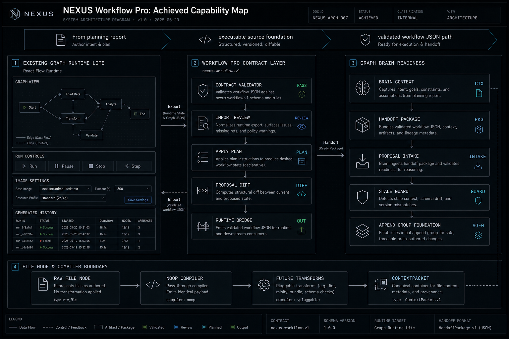

Workflow Pro 已從規劃層進入可驗證工程地基
這份報告整理上一個大型 Workflow Pro 迭代真正新增的能力：第三工作區模式、契約層、驗證器、Runtime Bridge、Brain handoff、proposal intake、file compiler boundary、artifact evidence，以及 Graph Brain append group 的第一條現實路徑。

Executive Snapshot
上一輪的重點不是「多一個漂亮頁面」，而是把 Workflow Pro 從報告型構想推進到可被 source、測試、畫面驗證共同支撐的工程層。它現在能把 Graph 的 Runtime Lite 狀態轉成 LLM 可讀的工作流契約，並且有驗證、匯入、預覽、proposal、append 的基礎路徑。
已建立的地基
`workflow-pro` 成為 Panels 與 Graph 之外的第三個 workspace mode。
已建立的語言
`nexus.workflow.v1` 成為 Brain、Codex、UI、Runtime 之間的共同協議。
已建立的安全線
任何 LLM 生成的 workflow 先驗證，再預覽，再由 operator 明確追加或套用。
Product-Level Change
Workflow Pro 現在是一個工程 cockpit：Design、Brain、Evidence、Proposal Diff、Files、Settings 六個模式把原本散落在 Graph、docs、runtime、artifact service 的資訊收斂成可理解的產品層。
| Mode | 作用 | 價值 |
|---|---|---|
| Design | 工作流意圖與 foundation gate | 讓 operator 先理解設計目標 |
| Brain | handoff、guardrails、required output | 讓強 LLM 接手不迷路 |
| Evidence | run、artifact、error 摘要 | 讓 workflow 有可追溯性 |
| Proposal Diff | 匯入提案與差異 | 降低 LLM 直接改圖的風險 |
| Files | file/compiler lane | 為多模態與轉檔預留標準路徑 |
| Settings | capability inventory | 讓 Brain 知道現在能做什麼 |
Contract Layer
`nexus.workflow.v1` 是這次迭代最重要的抽象。它不是 workspace snapshot，也不是 runtime state，而是讓 LLM 能理解、評論、重設計並回傳的工作流設計合約。
包含欄位
- intent / successCriteria
- nodes / edges / outputs
- model / compiler / artifact policy
- execution notes / parallelGroups
- brain guardrails / capability inventory
不該混淆
- Workspace snapshot = 復原與搬移
- Runtime Lite = 實際執行狀態
- nexus.workflow.v1 = 設計與智能理解
Validator And Import Review
Workflow Pro 已經有 validation boundary。LLM 生成或 operator 貼上的 JSON 先被 parse，再被 contract validator 檢查。通過才會產生 accepted import review；失敗時只留下錯誤，不進入圖形變更。
重要結果
看起來合理但結構錯誤的 workflow 不會進入畫布。這是未來 Graph Brain 自動生成工作流的保險絲。
Runtime Bridge And Apply Plan
`src/lib/workflow-pro/runtime-bridge.ts` 是 canonical bridge。所有 `nexus.workflow.v1 -> Runtime Lite` 的行為都應該走這裡，避免未來出現多個不一致 converter。
Preserve
保留 LLM settings、image quality/ratio、file compiler metadata、node data。
Reset
重置 runtime execution state，避免匯入一組舊成功/失敗狀態。
Report
回報 dropped nodes/edges，讓 UI 或測試知道 contract 是否完整落地。
本輪額外修復
Graph Brain append 測試時發現 LLM `modelSettings` 曾在 normalize 時被洗回 default；已修正，新的匯入/append 路徑會保留 `xhigh/high/high`。
Brain Handoff And Proposal Intake
Workflow Pro 具備 Brain handoff package 與 proposal intake。強 LLM 可以讀到 workflow contract、runtime summary、capability inventory、guardrails、required output shape，再回傳 `nexus.workflowPro.brainReviewProposal.v1`。
Proposal 可以包含
- analysis
- questionsForSean
- missingCapabilities
- optimizedWorkflow
- source model metadata
Safety Gate
stale guard 會記住被驗證的原文。operator 修改 JSON 後，舊的 accepted 結果立刻失效，不能重複拿來 import。
File Node And Compiler Boundary
`node.file` 是可擴充多模態 workflow 的關鍵地基。它今天可以只是 noop compiler，但每個檔案都已經可以穿過同一個標準邊界，未來 zip/pdf/audio/image/video 等轉譯層能插在同一個位置。
Generated Assets And Evidence
Graph 已經具備 generated history 與 download affordance。Workflow Pro 的 Evidence mode 則把 runtime runs、node status、last error、artifacts、ContextPackets 轉成可讀證據。
操作者看到的價值
知道哪個節點跑了、產生了什麼、哪裡失敗、能否下載或回放。
LLM 看到的價值
Brain 不只看設計圖，也能讀執行結果與失敗證據，下一次提出更準確的優化。
Verification Evidence
這些不是靜態報告宣稱，而是 source tests、typecheck、lint、browser smoke、Computer Use screen 操作共同確認。
| Gate | Result | Meaning |
|---|---|---|
| Workflow Pro library tests | passed | contract、handoff、validator、proposal、bridge 有單元保護 |
| Graph Brain append tests | passed | append group 不覆蓋既有畫布 |
| Typecheck / lint | passed | 新增資料流符合 TS 與專案規範 |
| Chrome screen test | passed | Graph Brain 面板能實際 append 新節點群 |
What This Enables Next
上一輪完成的是跑道。下一輪要拿滿 30 分，就要讓 Graph Brain 真正理解自然需求、自己規劃節點路徑、輸出嚴格 JSON、append 新 workflow group，並誠實指出現在做不到的功能。
下一個產品能力
使用者用自然語言描述想做什麼，Brain 產生新的一組工作流，而不是照抄標準答案。
下一個驗收方式
Computer Use 真實操作螢幕，用 hidden-answer rubric 測試 Brain 自己想出節點順序與能力缺口。